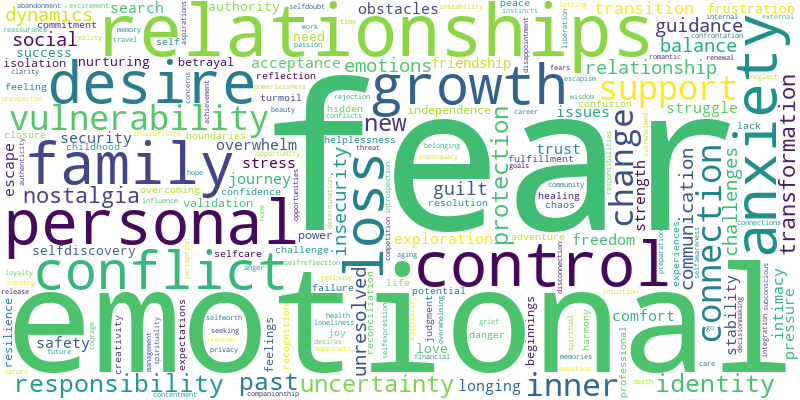
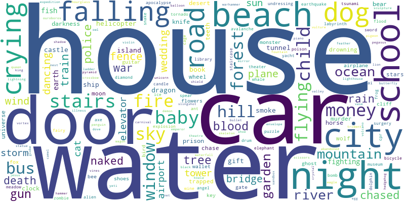

<h1 style="text-align:center;">Dreamverse State</h1>
<h2 style="text-align:center;">May 30, 2024</h2>
<div style="padding: 80px;"><html>
    <head>
        <meta charset="utf-8">
        
            <script src="lib/bindings/utils.js"></script>
            <link rel="stylesheet" href="https://cdnjs.cloudflare.com/ajax/libs/vis-network/9.1.2/dist/dist/vis-network.min.css" integrity="sha512-WgxfT5LWjfszlPHXRmBWHkV2eceiWTOBvrKCNbdgDYTHrT2AeLCGbF4sZlZw3UMN3WtL0tGUoIAKsu8mllg/XA==" crossorigin="anonymous" referrerpolicy="no-referrer" />
            <script src="https://cdnjs.cloudflare.com/ajax/libs/vis-network/9.1.2/dist/vis-network.min.js" integrity="sha512-LnvoEWDFrqGHlHmDD2101OrLcbsfkrzoSpvtSQtxK3RMnRV0eOkhhBN2dXHKRrUU8p2DGRTk35n4O8nWSVe1mQ==" crossorigin="anonymous" referrerpolicy="no-referrer"></script>
            
        
<center>
<h1></h1>
</center>

<!-- <link rel="stylesheet" href="../node_modules/vis/dist/vis.min.css" type="text/css" />
<script type="text/javascript" src="../node_modules/vis/dist/vis.js"> </script>-->
        <link
          href="https://cdn.jsdelivr.net/npm/bootstrap@5.0.0-beta3/dist/css/bootstrap.min.css"
          rel="stylesheet"
          integrity="sha384-eOJMYsd53ii+scO/bJGFsiCZc+5NDVN2yr8+0RDqr0Ql0h+rP48ckxlpbzKgwra6"
          crossorigin="anonymous"
        />
        <script
          src="https://cdn.jsdelivr.net/npm/bootstrap@5.0.0-beta3/dist/js/bootstrap.bundle.min.js"
          integrity="sha384-JEW9xMcG8R+pH31jmWH6WWP0WintQrMb4s7ZOdauHnUtxwoG2vI5DkLtS3qm9Ekf"
          crossorigin="anonymous"
        ></script>


        <center>
          <h1></h1>
        </center>
        <style type="text/css">

             #mynetwork {
                 width: 100%;
                 height: 750px;
                 background-color: #2b252f;
                 border: 1px solid lightgray;
                 position: relative;
                 float: left;
             }

             
             #loadingBar {
                 position:absolute;
                 top:0px;
                 left:0px;
                 width: 100%;
                 height: 750px;
                 background-color:rgba(200,200,200,0.8);
                 -webkit-transition: all 0.5s ease;
                 -moz-transition: all 0.5s ease;
                 -ms-transition: all 0.5s ease;
                 -o-transition: all 0.5s ease;
                 transition: all 0.5s ease;
                 opacity:1;
             }

             #bar {
                 position:absolute;
                 top:0px;
                 left:0px;
                 width:20px;
                 height:20px;
                 margin:auto auto auto auto;
                 border-radius:11px;
                 border:2px solid rgba(30,30,30,0.05);
                 background: rgb(0, 173, 246); /* Old browsers */
                 box-shadow: 2px 0px 4px rgba(0,0,0,0.4);
             }

             #border {
                 position:absolute;
                 top:10px;
                 left:10px;
                 width:500px;
                 height:23px;
                 margin:auto auto auto auto;
                 box-shadow: 0px 0px 4px rgba(0,0,0,0.2);
                 border-radius:10px;
             }

             #text {
                 position:absolute;
                 top:8px;
                 left:530px;
                 width:30px;
                 height:50px;
                 margin:auto auto auto auto;
                 font-size:22px;
                 color: #000000;
             }

             div.outerBorder {
                 position:relative;
                 top:400px;
                 width:600px;
                 height:44px;
                 margin:auto auto auto auto;
                 border:8px solid rgba(0,0,0,0.1);
                 background: rgb(252,252,252); /* Old browsers */
                 background: -moz-linear-gradient(top,  rgba(252,252,252,1) 0%, rgba(237,237,237,1) 100%); /* FF3.6+ */
                 background: -webkit-gradient(linear, left top, left bottom, color-stop(0%,rgba(252,252,252,1)), color-stop(100%,rgba(237,237,237,1))); /* Chrome,Safari4+ */
                 background: -webkit-linear-gradient(top,  rgba(252,252,252,1) 0%,rgba(237,237,237,1) 100%); /* Chrome10+,Safari5.1+ */
                 background: -o-linear-gradient(top,  rgba(252,252,252,1) 0%,rgba(237,237,237,1) 100%); /* Opera 11.10+ */
                 background: -ms-linear-gradient(top,  rgba(252,252,252,1) 0%,rgba(237,237,237,1) 100%); /* IE10+ */
                 background: linear-gradient(to bottom,  rgba(252,252,252,1) 0%,rgba(237,237,237,1) 100%); /* W3C */
                 filter: progid:DXImageTransform.Microsoft.gradient( startColorstr='#fcfcfc', endColorstr='#ededed',GradientType=0 ); /* IE6-9 */
                 border-radius:72px;
                 box-shadow: 0px 0px 10px rgba(0,0,0,0.2);
             }
             

             

             
        </style>
    </head>


    <body>
        <div class="card" style="width: 100%">
            
            
            <div id="mynetwork" class="card-body"></div>
        </div>

        
            <div id="loadingBar">
              <div class="outerBorder">
                <div id="text">0%</div>
                <div id="border">
                  <div id="bar"></div>
                </div>
              </div>
            </div>
        
        

        <script type="text/javascript">

              // initialize global variables.
              var edges;
              var nodes;
              var allNodes;
              var allEdges;
              var nodeColors;
              var originalNodes;
              var network;
              var container;
              var options, data;
              var filter = {
                  item : '',
                  property : '',
                  value : []
              };

              

              

              // This method is responsible for drawing the graph, returns the drawn network
              function drawGraph() {
                  var container = document.getElementById('mynetwork');

                  

                  // parsing and collecting nodes and edges from the python
                  nodes = new vis.DataSet([{"color": "red", "font": {"color": "white"}, "id": "vulnerability", "label": "vulnerability", "shape": "dot", "title": "vulnerability"}, {"color": "purple", "font": {"color": "white"}, "id": "healing", "label": "healing", "shape": "dot", "title": "healing"}, {"color": "red", "font": {"color": "white"}, "id": "anxiety", "label": "anxiety", "shape": "dot", "title": "anxiety"}, {"color": "purple", "font": {"color": "white"}, "id": "powerlessness", "label": "powerlessness", "shape": "dot", "title": "powerlessness"}, {"color": "red", "font": {"color": "white"}, "id": "fear", "label": "fear", "shape": "dot", "title": "fear"}, {"color": "red", "font": {"color": "white"}, "id": "loss", "label": "loss", "shape": "dot", "title": "loss"}, {"color": "red", "font": {"color": "white"}, "id": "house", "label": "house", "shape": "dot", "title": "house"}, {"color": "red", "font": {"color": "white"}, "id": "protection", "label": "protection", "shape": "dot", "title": "protection"}, {"color": "purple", "font": {"color": "white"}, "id": "exposure", "label": "exposure", "shape": "dot", "title": "exposure"}, {"color": "red", "font": {"color": "white"}, "id": "car", "label": "car", "shape": "dot", "title": "car"}, {"color": "purple", "font": {"color": "white"}, "id": "trust", "label": "trust", "shape": "dot", "title": "trust"}, {"color": "purple", "font": {"color": "white"}, "id": "betrayal", "label": "betrayal", "shape": "dot", "title": "betrayal"}, {"color": "purple", "font": {"color": "white"}, "id": "night", "label": "night", "shape": "dot", "title": "night"}, {"color": "purple", "font": {"color": "white"}, "id": "conflict", "label": "conflict", "shape": "dot", "title": "conflict"}, {"color": "red", "font": {"color": "white"}, "id": "transformation", "label": "transformation", "shape": "dot", "title": "transformation"}, {"color": "purple", "font": {"color": "white"}, "id": "guilt", "label": "guilt", "shape": "dot", "title": "guilt"}, {"color": "purple", "font": {"color": "white"}, "id": "door", "label": "door", "shape": "dot", "title": "door"}, {"color": "purple", "font": {"color": "white"}, "id": "money", "label": "money", "shape": "dot", "title": "money"}, {"color": "purple", "font": {"color": "white"}, "id": "control", "label": "control", "shape": "dot", "title": "control"}, {"color": "purple", "font": {"color": "white"}, "id": "loss control", "label": "loss control", "shape": "dot", "title": "loss control"}, {"color": "purple", "font": {"color": "white"}, "id": "change", "label": "change", "shape": "dot", "title": "change"}, {"color": "purple", "font": {"color": "white"}, "id": "insecurity", "label": "insecurity", "shape": "dot", "title": "insecurity"}, {"color": "purple", "font": {"color": "white"}, "id": "avoidance", "label": "avoidance", "shape": "dot", "title": "avoidance"}, {"color": "purple", "font": {"color": "white"}, "id": "dog", "label": "dog", "shape": "dot", "title": "dog"}, {"color": "purple", "font": {"color": "white"}, "id": "isolation", "label": "isolation", "shape": "dot", "title": "isolation"}, {"color": "purple", "font": {"color": "white"}, "id": "threat", "label": "threat", "shape": "dot", "title": "threat"}, {"color": "red", "font": {"color": "white"}, "id": "personal growth", "label": "personal growth", "shape": "dot", "title": "personal growth"}, {"color": "purple", "font": {"color": "white"}, "id": "confrontation", "label": "confrontation", "shape": "dot", "title": "confrontation"}, {"color": "purple", "font": {"color": "white"}, "id": "fence", "label": "fence", "shape": "dot", "title": "fence"}, {"color": "purple", "font": {"color": "white"}, "id": "transition", "label": "transition", "shape": "dot", "title": "transition"}, {"color": "red", "font": {"color": "white"}, "id": "responsibility", "label": "responsibility", "shape": "dot", "title": "responsibility"}, {"color": "purple", "font": {"color": "white"}, "id": "family", "label": "family", "shape": "dot", "title": "family"}, {"color": "purple", "font": {"color": "white"}, "id": "stress", "label": "stress", "shape": "dot", "title": "stress"}, {"color": "purple", "font": {"color": "white"}, "id": "relationships", "label": "relationships", "shape": "dot", "title": "relationships"}, {"color": "purple", "font": {"color": "white"}, "id": "intrusion", "label": "intrusion", "shape": "dot", "title": "intrusion"}, {"color": "purple", "font": {"color": "white"}, "id": "garden", "label": "garden", "shape": "dot", "title": "garden"}, {"color": "purple", "font": {"color": "white"}, "id": "overwhelm", "label": "overwhelm", "shape": "dot", "title": "overwhelm"}, {"color": "purple", "font": {"color": "white"}, "id": "selfawareness", "label": "selfawareness", "shape": "dot", "title": "selfawareness"}, {"color": "purple", "font": {"color": "white"}, "id": "safety", "label": "safety", "shape": "dot", "title": "safety"}, {"color": "purple", "font": {"color": "white"}, "id": "police", "label": "police", "shape": "dot", "title": "police"}, {"color": "purple", "font": {"color": "white"}, "id": "tunnel", "label": "tunnel", "shape": "dot", "title": "tunnel"}, {"color": "purple", "font": {"color": "white"}, "id": "uncertainty", "label": "uncertainty", "shape": "dot", "title": "uncertainty"}, {"color": "purple", "font": {"color": "white"}, "id": "helplessness", "label": "helplessness", "shape": "dot", "title": "helplessness"}, {"color": "purple", "font": {"color": "white"}, "id": "water", "label": "water", "shape": "dot", "title": "water"}, {"color": "purple", "font": {"color": "white"}, "id": "resilience", "label": "resilience", "shape": "dot", "title": "resilience"}, {"color": "purple", "font": {"color": "white"}, "id": "identity", "label": "identity", "shape": "dot", "title": "identity"}, {"color": "purple", "font": {"color": "white"}, "id": "chaos", "label": "chaos", "shape": "dot", "title": "chaos"}, {"color": "purple", "font": {"color": "white"}, "id": "security", "label": "security", "shape": "dot", "title": "security"}, {"color": "purple", "font": {"color": "white"}, "id": "acceptance", "label": "acceptance", "shape": "dot", "title": "acceptance"}, {"color": "purple", "font": {"color": "white"}, "id": "nostalgia", "label": "nostalgia", "shape": "dot", "title": "nostalgia"}, {"color": "purple", "font": {"color": "white"}, "id": "school", "label": "school", "shape": "dot", "title": "school"}, {"color": "purple", "font": {"color": "white"}, "id": "war", "label": "war", "shape": "dot", "title": "war"}, {"color": "purple", "font": {"color": "white"}, "id": "authority", "label": "authority", "shape": "dot", "title": "authority"}, {"color": "purple", "font": {"color": "white"}, "id": "challenges", "label": "challenges", "shape": "dot", "title": "challenges"}, {"color": "purple", "font": {"color": "white"}, "id": "city", "label": "city", "shape": "dot", "title": "city"}, {"color": "purple", "font": {"color": "white"}, "id": "freedom", "label": "freedom", "shape": "dot", "title": "freedom"}, {"color": "purple", "font": {"color": "white"}, "id": "sky", "label": "sky", "shape": "dot", "title": "sky"}, {"color": "purple", "font": {"color": "white"}, "id": "flying", "label": "flying", "shape": "dot", "title": "flying"}, {"color": "purple", "font": {"color": "white"}, "id": "connection", "label": "connection", "shape": "dot", "title": "connection"}, {"color": "purple", "font": {"color": "white"}, "id": "stairs", "label": "stairs", "shape": "dot", "title": "stairs"}, {"color": "purple", "font": {"color": "white"}, "id": "road", "label": "road", "shape": "dot", "title": "road"}, {"color": "purple", "font": {"color": "white"}, "id": "reconciliation", "label": "reconciliation", "shape": "dot", "title": "reconciliation"}, {"color": "purple", "font": {"color": "white"}, "id": "journey", "label": "journey", "shape": "dot", "title": "journey"}, {"color": "purple", "font": {"color": "white"}, "id": "baby", "label": "baby", "shape": "dot", "title": "baby"}, {"color": "purple", "font": {"color": "white"}, "id": "wedding", "label": "wedding", "shape": "dot", "title": "wedding"}, {"color": "purple", "font": {"color": "white"}, "id": "airport", "label": "airport", "shape": "dot", "title": "airport"}, {"color": "purple", "font": {"color": "white"}, "id": "friendship", "label": "friendship", "shape": "dot", "title": "friendship"}, {"color": "purple", "font": {"color": "white"}, "id": "bus", "label": "bus", "shape": "dot", "title": "bus"}, {"color": "purple", "font": {"color": "white"}, "id": "growth", "label": "growth", "shape": "dot", "title": "growth"}, {"color": "purple", "font": {"color": "white"}, "id": "pressure", "label": "pressure", "shape": "dot", "title": "pressure"}, {"color": "purple", "font": {"color": "white"}, "id": "trapped", "label": "trapped", "shape": "dot", "title": "trapped"}, {"color": "purple", "font": {"color": "white"}, "id": "support", "label": "support", "shape": "dot", "title": "support"}, {"color": "purple", "font": {"color": "white"}, "id": "guidance", "label": "guidance", "shape": "dot", "title": "guidance"}, {"color": "purple", "font": {"color": "white"}, "id": "emotional connection", "label": "emotional connection", "shape": "dot", "title": "emotional connection"}, {"color": "purple", "font": {"color": "white"}, "id": "ocean", "label": "ocean", "shape": "dot", "title": "ocean"}, {"color": "purple", "font": {"color": "white"}, "id": "grief", "label": "grief", "shape": "dot", "title": "grief"}, {"color": "purple", "font": {"color": "white"}, "id": "crying", "label": "crying", "shape": "dot", "title": "crying"}, {"color": "purple", "font": {"color": "white"}, "id": "memory", "label": "memory", "shape": "dot", "title": "memory"}, {"color": "purple", "font": {"color": "white"}, "id": "escape", "label": "escape", "shape": "dot", "title": "escape"}, {"color": "purple", "font": {"color": "white"}, "id": "wolf", "label": "wolf", "shape": "dot", "title": "wolf"}, {"color": "purple", "font": {"color": "white"}, "id": "chased", "label": "chased", "shape": "dot", "title": "chased"}, {"color": "purple", "font": {"color": "white"}, "id": "ghost", "label": "ghost", "shape": "dot", "title": "ghost"}, {"color": "purple", "font": {"color": "white"}, "id": "family dynamics", "label": "family dynamics", "shape": "dot", "title": "family dynamics"}, {"color": "purple", "font": {"color": "white"}, "id": "universe", "label": "universe", "shape": "dot", "title": "universe"}, {"color": "purple", "font": {"color": "white"}, "id": "improvement", "label": "improvement", "shape": "dot", "title": "improvement"}, {"color": "purple", "font": {"color": "white"}, "id": "balance", "label": "balance", "shape": "dot", "title": "balance"}, {"color": "purple", "font": {"color": "white"}, "id": "cliff", "label": "cliff", "shape": "dot", "title": "cliff"}, {"color": "purple", "font": {"color": "white"}, "id": "darkness", "label": "darkness", "shape": "dot", "title": "darkness"}, {"color": "purple", "font": {"color": "white"}, "id": "moon", "label": "moon", "shape": "dot", "title": "moon"}, {"color": "purple", "font": {"color": "white"}, "id": "child", "label": "child", "shape": "dot", "title": "child"}, {"color": "purple", "font": {"color": "white"}, "id": "falling", "label": "falling", "shape": "dot", "title": "falling"}, {"color": "purple", "font": {"color": "white"}, "id": "new beginnings", "label": "new beginnings", "shape": "dot", "title": "new beginnings"}, {"color": "purple", "font": {"color": "white"}, "id": "exploration", "label": "exploration", "shape": "dot", "title": "exploration"}, {"color": "purple", "font": {"color": "white"}, "id": "injustice", "label": "injustice", "shape": "dot", "title": "injustice"}, {"color": "purple", "font": {"color": "white"}, "id": "rejection", "label": "rejection", "shape": "dot", "title": "rejection"}, {"color": "purple", "font": {"color": "white"}, "id": "time", "label": "time", "shape": "dot", "title": "time"}, {"color": "purple", "font": {"color": "white"}, "id": "urgency", "label": "urgency", "shape": "dot", "title": "urgency"}, {"color": "purple", "font": {"color": "white"}, "id": "selfreflection", "label": "selfreflection", "shape": "dot", "title": "selfreflection"}, {"color": "purple", "font": {"color": "white"}, "id": "peace", "label": "peace", "shape": "dot", "title": "peace"}, {"color": "purple", "font": {"color": "white"}, "id": "forest", "label": "forest", "shape": "dot", "title": "forest"}, {"color": "purple", "font": {"color": "white"}, "id": "tower", "label": "tower", "shape": "dot", "title": "tower"}, {"color": "purple", "font": {"color": "white"}, "id": "frustration", "label": "frustration", "shape": "dot", "title": "frustration"}, {"color": "purple", "font": {"color": "white"}, "id": "blood", "label": "blood", "shape": "dot", "title": "blood"}, {"color": "purple", "font": {"color": "white"}, "id": "selfdiscovery", "label": "selfdiscovery", "shape": "dot", "title": "selfdiscovery"}, {"color": "purple", "font": {"color": "white"}, "id": "unresolved emotions", "label": "unresolved emotions", "shape": "dot", "title": "unresolved emotions"}, {"color": "purple", "font": {"color": "white"}, "id": "past relationships", "label": "past relationships", "shape": "dot", "title": "past relationships"}, {"color": "purple", "font": {"color": "white"}, "id": "hope", "label": "hope", "shape": "dot", "title": "hope"}, {"color": "purple", "font": {"color": "white"}, "id": "fire", "label": "fire", "shape": "dot", "title": "fire"}, {"color": "purple", "font": {"color": "white"}, "id": "communication", "label": "communication", "shape": "dot", "title": "communication"}, {"color": "purple", "font": {"color": "white"}, "id": "relationship", "label": "relationship", "shape": "dot", "title": "relationship"}, {"color": "purple", "font": {"color": "white"}, "id": "nurturing", "label": "nurturing", "shape": "dot", "title": "nurturing"}, {"color": "purple", "font": {"color": "white"}, "id": "loyalty", "label": "loyalty", "shape": "dot", "title": "loyalty"}, {"color": "purple", "font": {"color": "white"}, "id": "boundaries", "label": "boundaries", "shape": "dot", "title": "boundaries"}, {"color": "purple", "font": {"color": "white"}, "id": "clarity", "label": "clarity", "shape": "dot", "title": "clarity"}, {"color": "purple", "font": {"color": "white"}, "id": "unresolved feelings", "label": "unresolved feelings", "shape": "dot", "title": "unresolved feelings"}, {"color": "purple", "font": {"color": "white"}, "id": "intimacy", "label": "intimacy", "shape": "dot", "title": "intimacy"}, {"color": "purple", "font": {"color": "white"}, "id": "rain", "label": "rain", "shape": "dot", "title": "rain"}, {"color": "purple", "font": {"color": "white"}, "id": "storm", "label": "storm", "shape": "dot", "title": "storm"}, {"color": "purple", "font": {"color": "white"}, "id": "social interactions", "label": "social interactions", "shape": "dot", "title": "social interactions"}, {"color": "purple", "font": {"color": "white"}, "id": "distrust", "label": "distrust", "shape": "dot", "title": "distrust"}, {"color": "purple", "font": {"color": "white"}, "id": "unattainable goals", "label": "unattainable goals", "shape": "dot", "title": "unattainable goals"}, {"color": "purple", "font": {"color": "white"}, "id": "full moon", "label": "full moon", "shape": "dot", "title": "full moon"}, {"color": "purple", "font": {"color": "white"}, "id": "beach", "label": "beach", "shape": "dot", "title": "beach"}, {"color": "purple", "font": {"color": "white"}, "id": "judgment", "label": "judgment", "shape": "dot", "title": "judgment"}]);
                  edges = new vis.DataSet([{"from": "vulnerability", "to": "healing", "value": 5}, {"from": "vulnerability", "to": "anxiety", "value": 7}, {"from": "vulnerability", "to": "powerlessness", "value": 4}, {"from": "vulnerability", "to": "fear", "value": 11}, {"from": "vulnerability", "to": "loss", "value": 5}, {"from": "vulnerability", "to": "house", "value": 7}, {"from": "vulnerability", "to": "protection", "value": 4}, {"from": "vulnerability", "to": "exposure", "value": 4}, {"from": "vulnerability", "to": "car", "value": 3}, {"from": "vulnerability", "to": "trust", "value": 5}, {"from": "vulnerability", "to": "betrayal", "value": 3}, {"from": "vulnerability", "to": "night", "value": 4}, {"from": "vulnerability", "to": "conflict", "value": 3}, {"from": "vulnerability", "to": "transformation", "value": 3}, {"from": "vulnerability", "to": "guilt", "value": 4}, {"from": "vulnerability", "to": "door", "value": 4}, {"from": "vulnerability", "to": "money", "value": 3}, {"from": "vulnerability", "to": "control", "value": 4}, {"from": "vulnerability", "to": "loss control", "value": 3}, {"from": "vulnerability", "to": "change", "value": 4}, {"from": "vulnerability", "to": "insecurity", "value": 4}, {"from": "healing", "to": "transformation", "value": 3}, {"from": "anxiety", "to": "fear", "value": 9}, {"from": "anxiety", "to": "loss", "value": 6}, {"from": "anxiety", "to": "avoidance", "value": 5}, {"from": "anxiety", "to": "dog", "value": 6}, {"from": "anxiety", "to": "house", "value": 6}, {"from": "anxiety", "to": "isolation", "value": 3}, {"from": "anxiety", "to": "change", "value": 5}, {"from": "anxiety", "to": "threat", "value": 3}, {"from": "anxiety", "to": "personal growth", "value": 4}, {"from": "anxiety", "to": "confrontation", "value": 3}, {"from": "anxiety", "to": "transformation", "value": 4}, {"from": "anxiety", "to": "betrayal", "value": 3}, {"from": "anxiety", "to": "car", "value": 6}, {"from": "anxiety", "to": "fence", "value": 3}, {"from": "anxiety", "to": "transition", "value": 4}, {"from": "anxiety", "to": "responsibility", "value": 8}, {"from": "anxiety", "to": "control", "value": 5}, {"from": "anxiety", "to": "family", "value": 3}, {"from": "anxiety", "to": "stress", "value": 4}, {"from": "anxiety", "to": "money", "value": 3}, {"from": "anxiety", "to": "relationships", "value": 3}, {"from": "anxiety", "to": "intrusion", "value": 3}, {"from": "anxiety", "to": "garden", "value": 3}, {"from": "anxiety", "to": "overwhelm", "value": 3}, {"from": "anxiety", "to": "selfawareness", "value": 3}, {"from": "anxiety", "to": "protection", "value": 5}, {"from": "anxiety", "to": "safety", "value": 3}, {"from": "anxiety", "to": "police", "value": 3}, {"from": "anxiety", "to": "tunnel", "value": 3}, {"from": "anxiety", "to": "uncertainty", "value": 5}, {"from": "anxiety", "to": "helplessness", "value": 4}, {"from": "anxiety", "to": "water", "value": 3}, {"from": "anxiety", "to": "resilience", "value": 3}, {"from": "anxiety", "to": "guilt", "value": 3}, {"from": "anxiety", "to": "identity", "value": 3}, {"from": "anxiety", "to": "chaos", "value": 3}, {"from": "anxiety", "to": "security", "value": 3}, {"from": "anxiety", "to": "conflict", "value": 3}, {"from": "powerlessness", "to": "fear", "value": 4}, {"from": "fear", "to": "challenges", "value": 3}, {"from": "fear", "to": "isolation", "value": 3}, {"from": "fear", "to": "loss", "value": 5}, {"from": "fear", "to": "house", "value": 4}, {"from": "fear", "to": "growth", "value": 3}, {"from": "fear", "to": "change", "value": 5}, {"from": "fear", "to": "pressure", "value": 3}, {"from": "fear", "to": "trapped", "value": 3}, {"from": "fear", "to": "overwhelm", "value": 3}, {"from": "fear", "to": "uncertainty", "value": 4}, {"from": "fear", "to": "transformation", "value": 5}, {"from": "fear", "to": "helplessness", "value": 5}, {"from": "fear", "to": "protection", "value": 6}, {"from": "fear", "to": "police", "value": 3}, {"from": "fear", "to": "responsibility", "value": 3}, {"from": "fear", "to": "threat", "value": 3}, {"from": "fear", "to": "safety", "value": 3}, {"from": "fear", "to": "city", "value": 3}, {"from": "loss", "to": "identity", "value": 3}, {"from": "loss", "to": "family", "value": 4}, {"from": "loss", "to": "transition", "value": 4}, {"from": "loss", "to": "dog", "value": 4}, {"from": "loss", "to": "house", "value": 4}, {"from": "loss", "to": "grief", "value": 6}, {"from": "loss", "to": "connection", "value": 5}, {"from": "loss", "to": "nostalgia", "value": 6}, {"from": "loss", "to": "crying", "value": 3}, {"from": "loss", "to": "memory", "value": 4}, {"from": "loss", "to": "helplessness", "value": 4}, {"from": "loss", "to": "money", "value": 3}, {"from": "house", "to": "identity", "value": 3}, {"from": "house", "to": "security", "value": 3}, {"from": "house", "to": "family", "value": 5}, {"from": "house", "to": "transition", "value": 4}, {"from": "house", "to": "car", "value": 5}, {"from": "house", "to": "support", "value": 4}, {"from": "house", "to": "protection", "value": 4}, {"from": "house", "to": "baby", "value": 5}, {"from": "house", "to": "change", "value": 4}, {"from": "house", "to": "control", "value": 4}, {"from": "house", "to": "door", "value": 10}, {"from": "house", "to": "nostalgia", "value": 4}, {"from": "house", "to": "relationships", "value": 5}, {"from": "house", "to": "night", "value": 3}, {"from": "house", "to": "road", "value": 5}, {"from": "house", "to": "transformation", "value": 3}, {"from": "house", "to": "conflict", "value": 4}, {"from": "house", "to": "betrayal", "value": 3}, {"from": "house", "to": "chased", "value": 3}, {"from": "house", "to": "money", "value": 4}, {"from": "house", "to": "personal growth", "value": 5}, {"from": "house", "to": "overwhelm", "value": 3}, {"from": "house", "to": "ghost", "value": 4}, {"from": "house", "to": "responsibility", "value": 3}, {"from": "house", "to": "insecurity", "value": 3}, {"from": "house", "to": "loss control", "value": 3}, {"from": "protection", "to": "car", "value": 4}, {"from": "protection", "to": "baby", "value": 4}, {"from": "protection", "to": "responsibility", "value": 4}, {"from": "protection", "to": "safety", "value": 4}, {"from": "protection", "to": "nostalgia", "value": 3}, {"from": "protection", "to": "child", "value": 5}, {"from": "protection", "to": "city", "value": 5}, {"from": "protection", "to": "transformation", "value": 4}, {"from": "protection", "to": "helplessness", "value": 4}, {"from": "protection", "to": "conflict", "value": 4}, {"from": "protection", "to": "water", "value": 3}, {"from": "protection", "to": "war", "value": 4}, {"from": "protection", "to": "falling", "value": 3}, {"from": "car", "to": "family", "value": 4}, {"from": "car", "to": "baby", "value": 3}, {"from": "car", "to": "door", "value": 4}, {"from": "car", "to": "road", "value": 3}, {"from": "car", "to": "conflict", "value": 3}, {"from": "car", "to": "journey", "value": 3}, {"from": "car", "to": "city", "value": 3}, {"from": "car", "to": "bus", "value": 3}, {"from": "car", "to": "overwhelm", "value": 3}, {"from": "trust", "to": "change", "value": 3}, {"from": "trust", "to": "friendship", "value": 3}, {"from": "trust", "to": "control", "value": 3}, {"from": "betrayal", "to": "insecurity", "value": 5}, {"from": "betrayal", "to": "conflict", "value": 3}, {"from": "betrayal", "to": "injustice", "value": 3}, {"from": "betrayal", "to": "rejection", "value": 3}, {"from": "night", "to": "emotional connection", "value": 3}, {"from": "night", "to": "balance", "value": 3}, {"from": "night", "to": "darkness", "value": 5}, {"from": "night", "to": "intimacy", "value": 3}, {"from": "night", "to": "cliff", "value": 5}, {"from": "night", "to": "moon", "value": 5}, {"from": "night", "to": "ocean", "value": 7}, {"from": "night", "to": "water", "value": 6}, {"from": "night", "to": "door", "value": 4}, {"from": "conflict", "to": "acceptance", "value": 3}, {"from": "conflict", "to": "school", "value": 4}, {"from": "conflict", "to": "guilt", "value": 3}, {"from": "conflict", "to": "child", "value": 3}, {"from": "conflict", "to": "unresolved feelings", "value": 3}, {"from": "transformation", "to": "identity", "value": 5}, {"from": "transformation", "to": "growth", "value": 5}, {"from": "transformation", "to": "change", "value": 5}, {"from": "transformation", "to": "nostalgia", "value": 3}, {"from": "transformation", "to": "personal growth", "value": 3}, {"from": "transformation", "to": "hope", "value": 4}, {"from": "transformation", "to": "selfdiscovery", "value": 3}, {"from": "transformation", "to": "forest", "value": 3}, {"from": "transformation", "to": "fire", "value": 4}, {"from": "transformation", "to": "sky", "value": 3}, {"from": "transformation", "to": "blood", "value": 4}, {"from": "transformation", "to": "child", "value": 3}, {"from": "guilt", "to": "money", "value": 3}, {"from": "guilt", "to": "crying", "value": 4}, {"from": "door", "to": "money", "value": 4}, {"from": "door", "to": "blood", "value": 3}, {"from": "door", "to": "chased", "value": 3}, {"from": "money", "to": "authority", "value": 3}, {"from": "control", "to": "authority", "value": 3}, {"from": "control", "to": "sky", "value": 3}, {"from": "control", "to": "responsibility", "value": 5}, {"from": "change", "to": "identity", "value": 4}, {"from": "change", "to": "transition", "value": 4}, {"from": "change", "to": "universe", "value": 4}, {"from": "change", "to": "improvement", "value": 3}, {"from": "change", "to": "responsibility", "value": 5}, {"from": "change", "to": "nostalgia", "value": 3}, {"from": "change", "to": "personal growth", "value": 3}, {"from": "insecurity", "to": "distrust", "value": 3}, {"from": "insecurity", "to": "rejection", "value": 4}, {"from": "avoidance", "to": "dog", "value": 3}, {"from": "dog", "to": "family", "value": 3}, {"from": "dog", "to": "responsibility", "value": 3}, {"from": "dog", "to": "escape", "value": 3}, {"from": "dog", "to": "garden", "value": 4}, {"from": "dog", "to": "fence", "value": 4}, {"from": "dog", "to": "wolf", "value": 4}, {"from": "isolation", "to": "city", "value": 3}, {"from": "personal growth", "to": "acceptance", "value": 3}, {"from": "personal growth", "to": "school", "value": 4}, {"from": "personal growth", "to": "family", "value": 4}, {"from": "personal growth", "to": "transition", "value": 4}, {"from": "personal growth", "to": "journey", "value": 3}, {"from": "personal growth", "to": "selfdiscovery", "value": 3}, {"from": "personal growth", "to": "relationships", "value": 6}, {"from": "personal growth", "to": "new beginnings", "value": 3}, {"from": "personal growth", "to": "unresolved emotions", "value": 3}, {"from": "personal growth", "to": "past relationships", "value": 3}, {"from": "personal growth", "to": "responsibility", "value": 4}, {"from": "personal growth", "to": "water", "value": 4}, {"from": "fence", "to": "garden", "value": 4}, {"from": "fence", "to": "wolf", "value": 4}, {"from": "transition", "to": "identity", "value": 3}, {"from": "transition", "to": "airport", "value": 3}, {"from": "transition", "to": "friendship", "value": 3}, {"from": "transition", "to": "baby", "value": 3}, {"from": "transition", "to": "uncertainty", "value": 4}, {"from": "responsibility", "to": "family", "value": 5}, {"from": "responsibility", "to": "support", "value": 3}, {"from": "responsibility", "to": "baby", "value": 3}, {"from": "responsibility", "to": "frustration", "value": 3}, {"from": "responsibility", "to": "water", "value": 5}, {"from": "responsibility", "to": "relationships", "value": 3}, {"from": "responsibility", "to": "nurturing", "value": 4}, {"from": "responsibility", "to": "overwhelm", "value": 4}, {"from": "responsibility", "to": "trapped", "value": 3}, {"from": "family", "to": "journey", "value": 3}, {"from": "family", "to": "baby", "value": 4}, {"from": "family", "to": "wedding", "value": 3}, {"from": "stress", "to": "blood", "value": 3}, {"from": "relationships", "to": "identity", "value": 3}, {"from": "relationships", "to": "baby", "value": 3}, {"from": "relationships", "to": "social interactions", "value": 3}, {"from": "garden", "to": "wolf", "value": 4}, {"from": "overwhelm", "to": "uncertainty", "value": 3}, {"from": "overwhelm", "to": "blood", "value": 3}, {"from": "helplessness", "to": "grief", "value": 3}, {"from": "water", "to": "family dynamics", "value": 4}, {"from": "water", "to": "balance", "value": 3}, {"from": "water", "to": "darkness", "value": 5}, {"from": "water", "to": "clarity", "value": 3}, {"from": "water", "to": "cliff", "value": 5}, {"from": "water", "to": "moon", "value": 5}, {"from": "water", "to": "ocean", "value": 10}, {"from": "water", "to": "beach", "value": 5}, {"from": "identity", "to": "acceptance", "value": 3}, {"from": "identity", "to": "nostalgia", "value": 3}, {"from": "identity", "to": "school", "value": 3}, {"from": "identity", "to": "war", "value": 3}, {"from": "security", "to": "war", "value": 3}, {"from": "nostalgia", "to": "school", "value": 4}, {"from": "nostalgia", "to": "reconciliation", "value": 3}, {"from": "nostalgia", "to": "baby", "value": 3}, {"from": "nostalgia", "to": "connection", "value": 3}, {"from": "nostalgia", "to": "crying", "value": 3}, {"from": "school", "to": "connection", "value": 3}, {"from": "war", "to": "flying", "value": 4}, {"from": "war", "to": "war", "value": 4}, {"from": "war", "to": "city", "value": 5}, {"from": "war", "to": "judgment", "value": 3}, {"from": "city", "to": "flying", "value": 5}, {"from": "freedom", "to": "sky", "value": 3}, {"from": "connection", "to": "exploration", "value": 3}, {"from": "stairs", "to": "road", "value": 3}, {"from": "journey", "to": "bus", "value": 3}, {"from": "baby", "to": "new beginnings", "value": 3}, {"from": "friendship", "to": "bus", "value": 3}, {"from": "support", "to": "guidance", "value": 3}, {"from": "emotional connection", "to": "ocean", "value": 4}, {"from": "ocean", "to": "balance", "value": 4}, {"from": "ocean", "to": "darkness", "value": 7}, {"from": "ocean", "to": "unattainable goals", "value": 3}, {"from": "ocean", "to": "cliff", "value": 7}, {"from": "ocean", "to": "moon", "value": 7}, {"from": "ocean", "to": "full moon", "value": 4}, {"from": "balance", "to": "cliff", "value": 3}, {"from": "balance", "to": "darkness", "value": 3}, {"from": "balance", "to": "moon", "value": 3}, {"from": "cliff", "to": "darkness", "value": 5}, {"from": "cliff", "to": "moon", "value": 5}, {"from": "darkness", "to": "moon", "value": 5}, {"from": "time", "to": "urgency", "value": 4}, {"from": "time", "to": "selfreflection", "value": 3}, {"from": "time", "to": "peace", "value": 3}, {"from": "time", "to": "forest", "value": 4}, {"from": "time", "to": "tower", "value": 4}, {"from": "urgency", "to": "selfreflection", "value": 3}, {"from": "urgency", "to": "peace", "value": 3}, {"from": "urgency", "to": "forest", "value": 4}, {"from": "urgency", "to": "tower", "value": 4}, {"from": "selfreflection", "to": "forest", "value": 3}, {"from": "selfreflection", "to": "tower", "value": 3}, {"from": "peace", "to": "forest", "value": 4}, {"from": "peace", "to": "tower", "value": 3}, {"from": "forest", "to": "tower", "value": 5}, {"from": "unresolved emotions", "to": "past relationships", "value": 4}, {"from": "communication", "to": "relationship", "value": 4}, {"from": "loyalty", "to": "boundaries", "value": 3}, {"from": "rain", "to": "storm", "value": 3}]);

                  nodeColors = {};
                  allNodes = nodes.get({ returnType: "Object" });
                  for (nodeId in allNodes) {
                    nodeColors[nodeId] = allNodes[nodeId].color;
                  }
                  allEdges = edges.get({ returnType: "Object" });
                  // adding nodes and edges to the graph
                  data = {nodes: nodes, edges: edges};

                  var options = {
    "configure": {
        "enabled": false
    },
    "edges": {
        "color": {
            "inherit": true
        },
        "smooth": {
            "enabled": true,
            "type": "dynamic"
        }
    },
    "interaction": {
        "dragNodes": true,
        "hideEdgesOnDrag": false,
        "hideNodesOnDrag": false
    },
    "physics": {
        "enabled": true,
        "stabilization": {
            "enabled": true,
            "fit": true,
            "iterations": 1000,
            "onlyDynamicEdges": false,
            "updateInterval": 50
        }
    }
};

                  


                  

                  network = new vis.Network(container, data, options);

                  

                  

                  


                  
                      network.on("stabilizationProgress", function(params) {
                          document.getElementById('loadingBar').removeAttribute("style");
                          var maxWidth = 496;
                          var minWidth = 20;
                          var widthFactor = params.iterations/params.total;
                          var width = Math.max(minWidth,maxWidth * widthFactor);
                          document.getElementById('bar').style.width = width + 'px';
                          document.getElementById('text').innerHTML = Math.round(widthFactor*100) + '%';
                      });
                      network.once("stabilizationIterationsDone", function() {
                          document.getElementById('text').innerHTML = '100%';
                          document.getElementById('bar').style.width = '496px';
                          document.getElementById('loadingBar').style.opacity = 0;
                          // really clean the dom element
                          setTimeout(function () {document.getElementById('loadingBar').style.display = 'none';}, 500);
                      });
                  

                  return network;

              }
              drawGraph();
        </script>
    </body>
</html></div><h1 style="text-align:center;"> </h1>
<h2 style="text-align:center;">Shared Themes</h2>
<div style="text-align:center;"></div>
<h1 style="text-align:center;"> </h1>
<h2 style="text-align:center;">Shared Symbols</h2>
<div style="text-align:center;"></div>